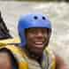

Experience the thrill of whitewater rafting with Ron’s Whitewater Rafting. Our guided trips take you through scenic rivers and exciting rapids, whether you are new to rafting or seeking adventure. With a focus on safety, fun, and lasting memories, we invite you to explore the river with us.